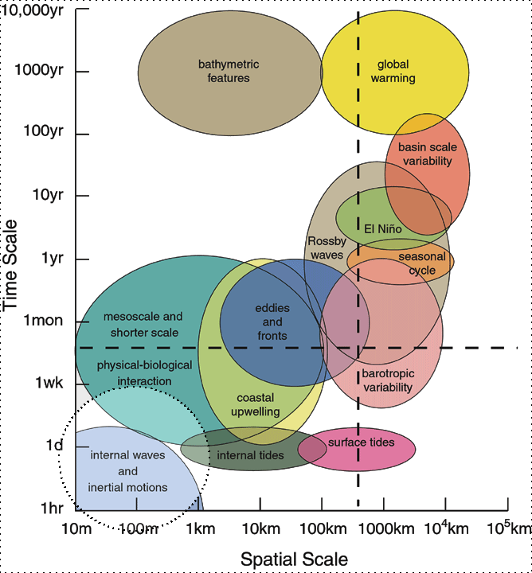

SOCIB: a multi-platform
ocean observing system


What is SOCIB
A little bit of context
A lot of processes are taking place
at different scales

SOCIB, an example of ICTS
ICTS = Singular Scientific and Technological Infrastructures
How did I end up there?
Hint: not because of the beaches